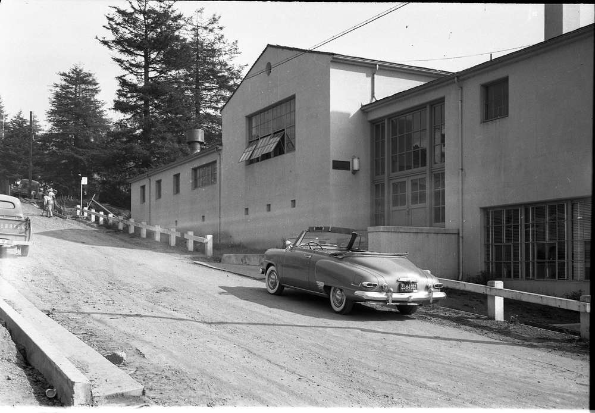

Creative Spaces
Legacy of Craftsmanship
Originally opened in 1950 as the home of Humboldt’s Industrial Arts program, the building was named for Horace “Pop” Jenkins, a ceramicist and faculty member who championed hands-on learning. Following a $12 million renovation funded by the California State University’s Chancellor’s Office, the building re-opened in Fall 2025 as a modern home for the sculpture and ceramics programs, thoughtfully designed to support the next generation of artists.
